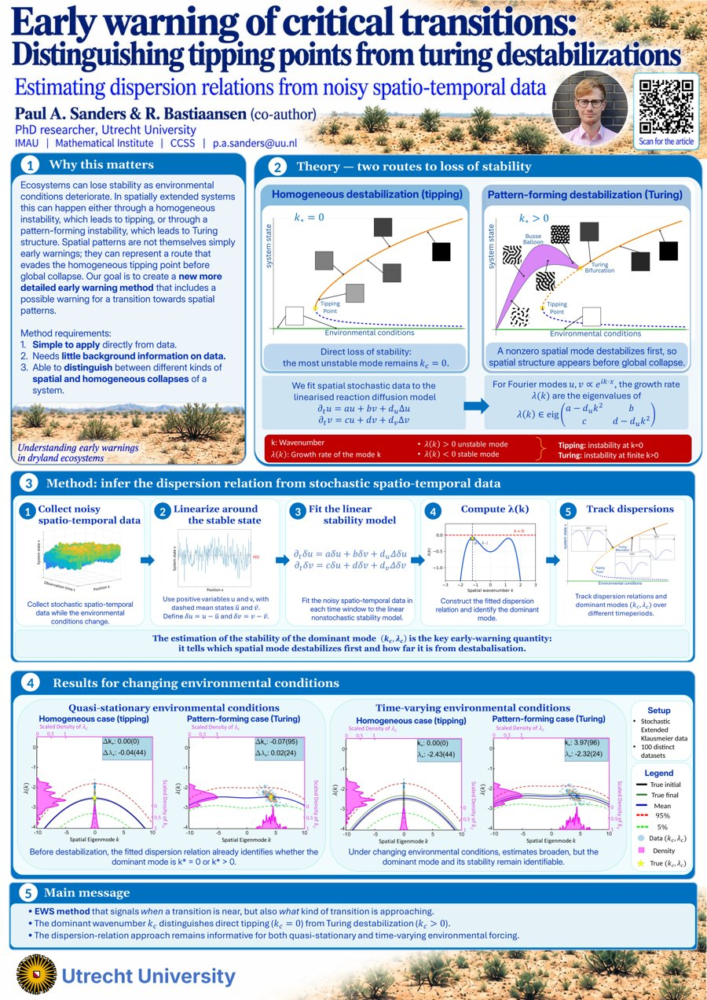
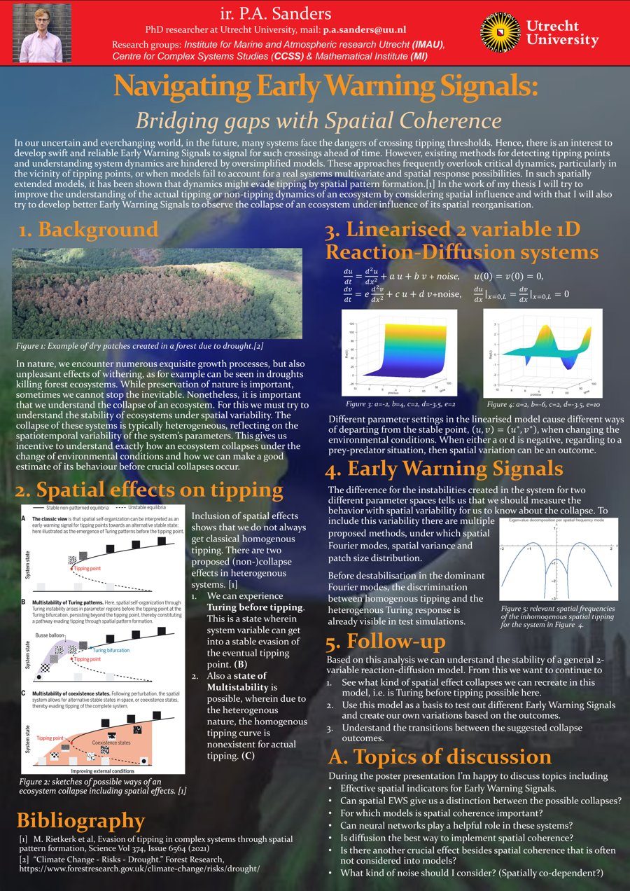
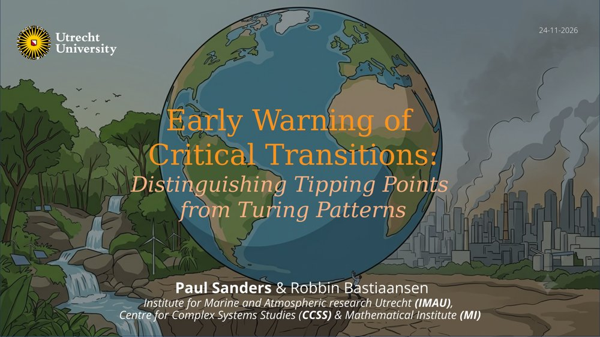

PhD researcher in applied mathematics, Utrecht University
Mathematical Institute · Institute for Marine and Atmospheric research Utrecht (IMAU) · Centre for Complex Systems Studies (CCSS)
Can we tell, from noisy data alone, not only that a system is about to change, but how?
I'm an enthusiastic PhD student who loves understanding more of the world, and I'm just as big a fan of puzzles. That combination is why I enjoy working on good mathematical problems that come from real-life systems. And when something doesn't make sense to me yet, that only hooks me more.
My PhD research is about early warning signals for critical transitions in spatially extended systems, such as dryland ecosystems. Classic early warning signals tell you that a system is losing stability. I develop methods that also tell you what kind of transition is coming: a collapse of the whole system, the formation of spatial patterns, or a gradual rather than an abrupt shift. I work with Robbin Bastiaansen at Utrecht University, and with Christian Kuehn and Bastian Hilder at TU Munich.
When environmental conditions get worse, a spatially extended system can lose stability in two different ways. It can tip as a whole, or a spatial mode can destabilise first so that patterns form, which may let the system avoid collapse. Standard early warning signals, such as rising variance, look the same in both cases.
We fit a linear stability model directly to noisy spatio-temporal data and use it to estimate the dispersion relation λ(k). The wavenumber that destabilises first tells the two routes apart: k = 0 for tipping, k > 0 for a Turing instability. The method works under changing conditions and needs little prior knowledge of the system.

A bifurcation can be supercritical, where the system moves smoothly to a nearby new state, or subcritical, where it jumps somewhere far away. Knowing which one is coming matters enormously, but most early warning methods are blind to it.
We extend a regression-based stability method with the leading cubic term and use its sign to classify the bifurcation, tested on a stochastic pitchfork model and the stochastic Swift–Hohenberg equation. Classification improves with longer observations, closeness to the bifurcation, stronger noise and stronger nonlinearity. But those same conditions raise the risk of noise-induced tipping in the subcritical case, so there is a real trade-off in when a warning is useful. In spatial systems, observing the full field allows much shorter observation windows.
Real landscapes are never uniform. I'm currently studying how spatial heterogeneity in the environment affects these early warnings, and which of their conclusions survive it.

Poster · Navigating early warning signals (2024)
Slides · Dynamics Days Europe 2026Also took part in: Study Group Mathematics with Industry (SWI 2025, Utrecht) · NDNS+ workshops (2024–2026) · BBOS Autumn Symposia (2024, 2025)
MATLAB code and data for classifying supercritical and subcritical bifurcations from noisy observations, in a stochastic pitchfork model and the stochastic Swift–Hohenberg equation. It reproduces the figures of the 2026 preprint.
My interests go well beyond my current projects. I enjoy any problem with an interesting theoretical analysis behind it: dynamical systems, perturbation theory, amplitude equations, stochastic dynamics, spatial pattern formation, and anything else where a good piece of mathematics explains what a real system does.
I'm open to collaborations. If you're working on something similar to my research, want to apply these methods to your own system or data, or simply have a question or idea you'd like to discuss, I'd be glad to hear from you at p.a.sanders@uu.nl.
Mathematical Institute, Utrecht University, Utrecht, The Netherlands